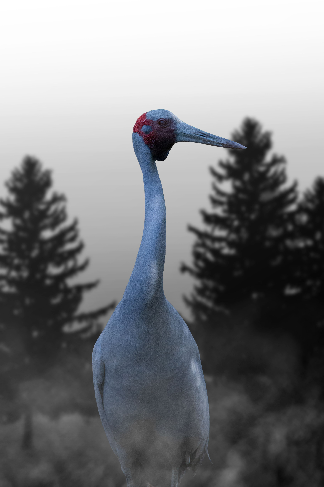

The Brolga is a large Australian crane with long legs, a long neck, grey plumage and a distinctive red patch of bare skin on the head. It is particularly associated with wetlands and open grasslands in northern and eastern Australia. Brolgas feed on roots, tubers, seeds and small animals and may forage in shallow water or on dry ground. They are famous for their elaborate courtship displays, during which pairs may bow, leap, spread their wings and toss vegetation into the air. Brolgas can form large groups outside the breeding season and are one of Australia's most recognizable native cranes.
Brolga is best separated from Sarus Crane by looking at the overall shape and the strongest plumage pattern rather than one small mark. Compared with Sarus Crane, it has a different combination of colour, proportions and typical behaviour, which becomes clearer when the whole bird is visible. Common Crane can also resemble it in some settings, but differences in bill shape, tail length, wing pattern, posture or habitat can help narrow the identification. Calls and behaviour are useful supporting clues when plumage is difficult to see, especially for birds that spend much of their time in dense vegetation. Using several features together is more reliable than identifying the bird from a single characteristic.
IOC World Bird List v15.2 — taxonomy and nomenclature, IUCN Red List of Threatened Species — global conservation status, BirdLife International — species distribution, ecology and conservation, eBird / Cornell Lab of Ornithology — identification and life-history information